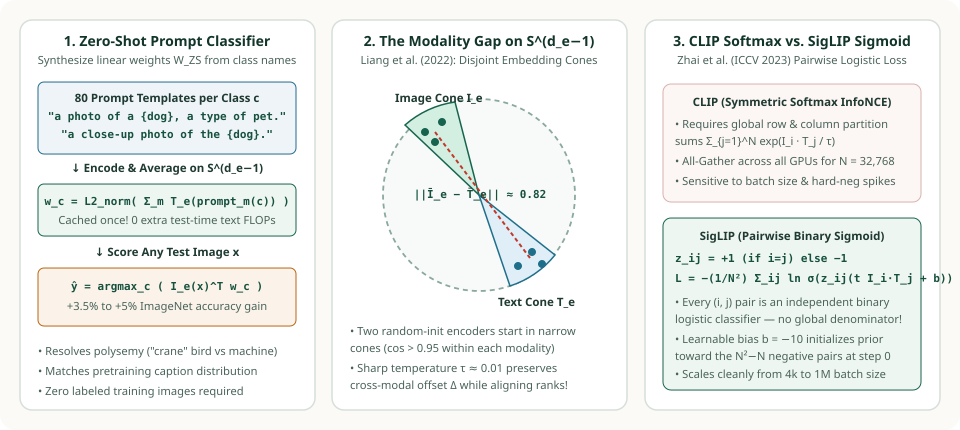
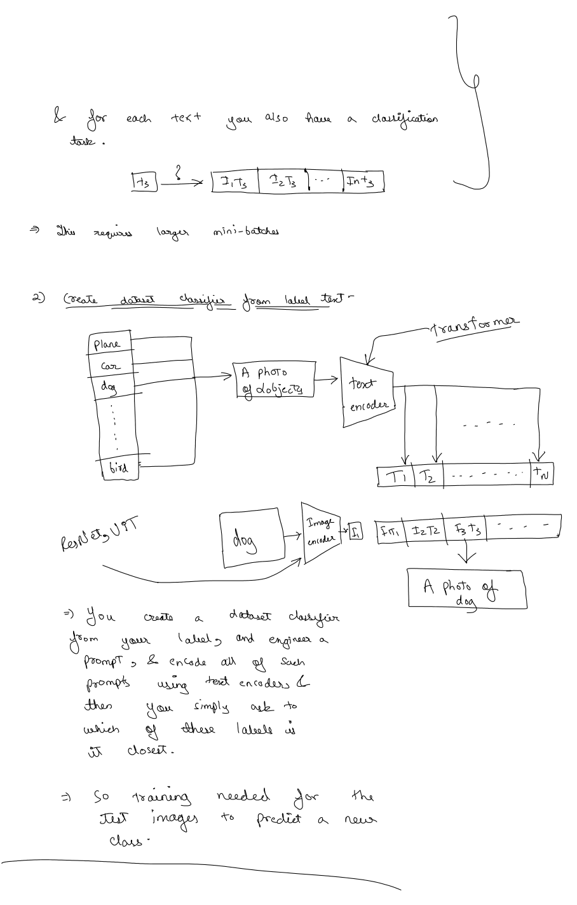

4. Zero-Shot Classification, Prompt Ensembling, the Modality Gap & Modern CLIP Frontiers (SigLIP, OpenCLIP, MetaCLIP)
Once CLIP's Image Encoder and Text Encoder are pre-trained, how do we turn them into a classifier for a brand-new dataset without a single labeled training image? Page 2 of our handwritten OneNote notes illustrates the exact recipe: convert the dataset's class names (plane, car, dog, …, bird) into natural language prompts ("A photo of a {object}"), encode all prompts once with the Text Transformer to build a zero-shot weight matrix, and pick whichever prompt vector has the highest cosine similarity with the test image! In this final chapter, we trace that zero-shot pipeline, show why 80-prompt ensembling adds $+3.5\%$ to $+5\%$ on ImageNet at zero extra test-time compute, examine the geometric Modality Gap, and derive Google's pairwise sigmoid successor SigLIP.


1. Compiling a Zero-Shot Classifier from Label Text (Study Notes)
Look at our handwritten diagram from Page 2 of the OneNote study notes below:


plane, car, dog, …, bird) using prompt templates and scoring a test image dog via cosine dot products $[I_1 T_1 \mid I_1 T_2 \mid I_1 T_3 \dots]$.Let us formalize the two-step zero-shot inference procedure shown in Figure 2 for any target dataset with $K$ class names $\{c_1, c_2, \dots, c_K\}$:
-
Offline Classifier Compilation (Run Once per Dataset):
Insert each class name $c_k$ into a natural language template such as $\text{prompt}(c_k) = \text{“A photo of a \{c\_k\}.”}$, encode all $K$ strings with the Text Transformer, and stack the resulting unit vectors as columns of a zero-shot classification matrix $\mathbf{W}_{\text{ZS}} \in \mathbb{R}^{d_e \times K}$:
$$\mathbf{t}_k = \frac{g_\phi(\text{prompt}(c_k))\,W_t}{\bigl\|g_\phi(\text{prompt}(c_k))\,W_t\bigr\|_2} \in \mathbb{S}^{d_e-1}, \qquad \mathbf{W}_{\text{ZS}} = \bigl[\,\mathbf{t}_1 \;\big|\; \mathbf{t}_2 \;\big|\; \dots \;\big|\; \mathbf{t}_K\,\bigr].$$Notice that $\mathbf{W}_{\text{ZS}}$ has the exact same shape ($d_e \times K$) as a supervised linear classification head! And because $\mathbf{W}_{\text{ZS}}$ depends only on the $K$ class names, it is cached once in memory—the Text Transformer is never executed during test-image inference.
-
Test-Time Image Prediction (Zero Labeled Training Examples):
Given any test image $x$, encode and $\ell_2$-normalize it into $\mathbf{I}_1 \in \mathbb{S}^{d_e-1}$, multiply by $\mathbf{W}_{\text{ZS}}$, and select the class with maximum cosine similarity:
$$\hat{y}(x) = \arg\max_{k \in \{1, \dots, K\}} \bigl(\mathbf{I}_1^\top \mathbf{t}_k\bigr), \qquad P(y = k \mid x) = \frac{\exp\!\bigl(e^t\,\mathbf{I}_1^\top \mathbf{t}_k\bigr)}{\sum_{j=1}^{K} \exp\!\bigl(e^t\,\mathbf{I}_1^\top \mathbf{t}_j\bigr)}.$$
2. Why Prompt Engineering & 80-Template Ensembling Add $+3.5\%$ to $+5\%$
Why did we write "A photo of a {object}" in our OneNote diagram instead of just passing the bare word "dog" or "crane" into the text encoder? Radford et al. identified two failure modes of bare single-word labels:
- Distribution Mismatch: During pre-training on WIT-400M, images were almost never paired with a single isolated noun; they were paired with full descriptive phrases or sentences. Wrapping the class name in
"A photo of a {label}."alone boosts zero-shot ImageNet accuracy by $+1.3\%$! - Polysemy (Homonym Ambiguity): In ImageNet, the class label
"crane"appears twice (once for the wading bird, once for the construction machine), and"boxer"inside Oxford-IIIT Pets means the dog breed rather than an athlete. Adding domain context turns ambiguous single words into unambiguous concepts:- Oxford-IIIT Pets:
"A photo of a {label}, a type of pet." - FGVC Aircraft:
"A photo of a {label}, a type of aircraft." - EuroSAT Satellite:
"A centered satellite photo of {label}." - Food-101:
"A photo of {label}, a type of food."
- Oxford-IIIT Pets:
Zero-Cost Embedding-Space Ensembling Across $M = 80$ Templates
On ImageNet, a single target class $c_k$ might appear as a blurry photo, a close-up, a dark photo, a cropped photo, or a sketch. OpenAI curated $M = 80$ diverse context templates (e.g., "a bad photo of a {}", "a photo of the large {}", "a close-up photo of a {}", "a bright photo of a {}"). Instead of running $80$ separate classifier heads at test time, linearity of the inner product $\mathbf{I}_1^\top \mathbf{t}$ allows us to average and re-normalize the $80$ text embeddings for class $k$ into a single unit vector $\bar{\mathbf{t}}_k$ offline:
Combined with domain prompt engineering, 80-template embedding ensembling improves ImageNet zero-shot accuracy by nearly $+5\%$ (matching a ResNet with $4\times$ more compute) while costing zero extra FLOPs per test image!
3. The Modality Gap: Why Image and Text Vectors Live in Separate Cones
One might assume that after contrastive training on $400\text{M}$ pairs, a dog image embedding $\mathbf{I}_e^{(i)}$ and its caption embedding $\mathbf{T}_e^{(i)}$ coincide at the exact same point on the unit hypersphere ($\mathbf{I}_e^{(i)} \approx \mathbf{T}_e^{(i)}$). In a landmark NeurIPS 2022 paper (Mind the Gap), Liang et al. showed that this is false:
- Across CLIP, ALIGN, and VideoCLIP, all image embeddings cluster inside one narrow cone on $\mathbb{S}^{d_e-1}$ while all text embeddings cluster inside a completely separate cone separated by an Euclidean gap of $\|\bar{\mathbf{I}}_e - \bar{\mathbf{T}}_e\|_2 \approx 0.82$!
- Even for a matched ground-truth pair $(I_i, T_i)$, the cosine similarity is typically only $\mathbf{I}_e^{(i)} \cdot \mathbf{T}_e^{(i)} \approx 0.25\text{–}0.32$, whereas two completely unrelated images often have $\mathbf{I}_e^{(i)} \cdot \mathbf{I}_e^{(j)} > 0.50$.
- Why does this happen? (1) At initialization, two deep neural networks with ReLU/QuickGELU and LayerNorm map random inputs into two narrow, separated half-spaces (the cone effect). (2) Once the learnable inverse temperature $\exp(t)$ grows large ($\exp(t) \approx 100$, $\tau \approx 0.01$), a tiny relative cosine lead of $0.30$ vs. $0.22$ is amplified to logits $30.0$ vs. $22.0$ ($\Delta = 8.0$, softmax probability $99.97\%$), so the InfoNCE loss approaches zero without ever needing to close the constant translation vector $\boldsymbol{\Delta} = \bar{\mathbf{I}}_e - \bar{\mathbf{T}}_e$ between the two cones!
4. Beyond Softmax: Pairwise Sigmoid Loss in SigLIP (Zhai et al., 2023)
In Chapter 2, we saw that CLIP's symmetric InfoNCE loss computes row-wise and column-wise softmax normalization across the entire global batch of $N = 32{,}768$ pairs:
Computing the global denominator $\sum_{k=1}^N \exp(e^t\,\mathbf{I}_i \cdot \mathbf{T}_k)$ across $D$ distributed accelerators requires an expensive all-to-all all_gather of embeddings and materializing an $N \times N$ logit matrix in memory. Worse, softmax couples every sample in the batch: a single corrupted or outlier pair changes the denominator for all $N$ items.
SigLIP (Sigmoid Loss for Language Image Pre-Training, Zhai et al., ICCV 2023) eliminates global softmax normalization entirely. It treats every pair $(i, j) \in \{1, \dots, N\}^2$ as an independent binary logistic regression problem with label $z_{ij} = +1$ on the diagonal ($i = j$) and $z_{ij} = -1$ off the diagonal ($i \neq j$):
- Why the learnable bias $b$ (initialized to $b_0 = -10$) is essential: At step $0$ of training, there are $N$ positive pairs ($z_{ij} = +1$) and $N(N-1)$ negative pairs ($z_{ij} = -1$). If $b = 0$, every off-diagonal negative starts with sigmoid probability $\sigma(0) = 0.50$, generating an enormous initial gradient spike from the $N^2 - N$ negatives! Initializing $b_0 = -10$ sets the initial predicted positive probability to $\sigma(-10) \approx 4.5 \times 10^{-5}$, matching the heavily imbalanced prior from the very first step.
- Ring-All-Reduce Memory Scaling: Because there is no row/column partition sum $\sum_k$, devices can exchange small chunks of text embeddings in a ring and accumulate pairwise losses locally—enabling SigLIP to train smoothly at batch sizes from $N = 4{,}096$ all the way to $N = 1{,}000{,}000$.
| Property | CLIP (Symmetric Softmax InfoNCE) | SigLIP (Pairwise Sigmoid Loss) |
|---|---|---|
| Loss Formulation | Row softmax ($I \to T$) + Column softmax ($T \to I$) | $N^2$ independent binary logistic losses $\ln(1 + e^{-z_{ij}(e^t S_{ij} + b)})$ |
| Global Normalization | Requires row & column partition sums $\sum_{k=1}^N e^{L_{ik}}$ | None — every $(i, j)$ pair is decoupled |
| Learnable Logit Parameters | Log-temperature $t = \ln(1/\tau)$ ($t_0 = \ln(1/0.07)$) | Log-temperature $t$ ($t_0 = \ln 10$) + negative prior bias $b$ ($b_0 = -10$) |
| Optimal Batch Size Sweet Spot | $32{,}768\text{–}65{,}536$ (degrades at small $N < 4\text{k}$) | Strong at $16{,}384\text{–}32{,}768$; stable even at $N = 4{,}096$ or $1\text{M}$ |
5. Runnable Python Verification: 80-Prompt Ensembling & SigLIP Loss
import math
def l2_norm(v: list[float]) -> list[float]:
s = math.sqrt(sum(x * x for x in v))
return [x / s for x in v]
def dot(a: list[float], b: list[float]) -> float:
return sum(x * y for x, y in zip(a, b))
# 1. Verify Zero-Cost Prompt Ensembling (averaging M prompt embeddings offline)
dog_prompts = [
l2_norm([0.88, 0.32, -0.05]), # "a photo of a dog, a type of pet."
l2_norm([0.84, 0.38, -0.02]), # "a close-up photo of the dog."
l2_norm([0.91, 0.27, -0.08]), # "a bright photo of a dog."
]
mean_dog = [sum(p[d] for p in dog_prompts) / len(dog_prompts) for d in range(3)]
w_dog_ensembled = l2_norm(mean_dog)
# 2. Verify SigLIP Pairwise Binary Logistic Loss with b = -10 initialization
def siglip_loss(I_e: list[list[float]], T_e: list[list[float]], t: float, b: float) -> float:
n = len(I_e)
scale = math.exp(t)
total = 0.0
for i in range(n):
for j in range(n):
z_ij = 1.0 if i == j else -1.0
logit = scale * dot(I_e[i], T_e[j]) + b
# Numerically stable softplus: ln(1 + exp(-z_ij * logit))
x = -z_ij * logit
total += x + math.log1p(math.exp(-x)) if x > 0 else math.log1p(math.exp(x))
return total / n
I_batch = [l2_norm([0.95, 0.15]), l2_norm([0.10, 0.98])]
T_batch = [l2_norm([0.93, 0.18]), l2_norm([0.14, 0.96])]
loss_siglip = siglip_loss(I_batch, T_batch, t=math.log(10.0), b=-5.0)
print("Ensembled dog classifier weight:", [round(x, 4) for x in w_dog_ensembled])
print(f"SigLIP 2x2 batch loss: {loss_siglip:.4f}")